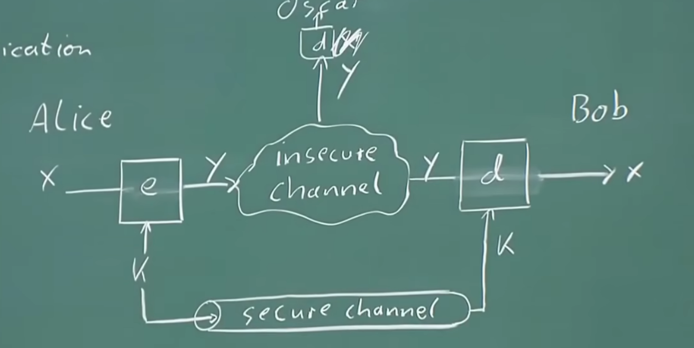

密码引言
密码学两个分支：
- 密码学（cryptography）
- 对称密码学
- 非对称密码学（公钥密码）
- 协议（protocols）
- 密码分析（cryptanalysis）
set-up for symmetric cryptography(对称密码学的设置)
简单问题：communication over insecure channel（通过不安全的通道进行通信）
channel example（通道示例）：
- Internet 互联网
- airwaves GSM,WIFI 无线电波 GSM，WIFI
- ……
一些名词：
- x ：plaintext 明文
- y ：ciphertext 密文
- e ：encryption function 加密函数
- d ：decryption function 解密函数
- k ：key 密钥
|k|：key space （密钥的数量）

kerckhoffs‘ principle 科克霍夫原理【1883】：
a cryptosystem should be secure even if the attacker knows all the details about the system, with the exception of the secret key
即使攻击者知道系统的所有细节（密钥除外），密码系统也应该是安全的
substitution cipher 替换密码
remark
- historical cipher 古典密码
- operations on letters 对字母进行操作（在数字上按位或字节加密）
- idea：replace every plaintext letter by a fixed ciphertext letter 将每个明文字母替换为固定的密文字母
example：移位密码
有一个密码对照表，通过密码表来进行密码的置换，如：
| 明文 | 密文 |
|---|---|
| a | l |
| b | d |
| c | w |
| … | … |
1. attack：brute-force attack or exhaustive key search 暴力攻击或穷举密钥搜索
对于上面的移位密码，我们就可以使用暴力攻击，因为一共 26 个英文字母，对应的密码表有如下种：
26 * 25 * 24 ... = 26! 近似值为$2^{88}$ => 密钥空间很大，我们不能进行暴露破解
2. attack：Letter Frequency Analysis(brute-force attack) 字母频率分析（暴力攻击）
每个英文字母在英文中出现的频率是不一样的，比如，e是英文字母中，最经常出现的，所以可以对密文中的字母分析，最多的那个字母很大可能就是e这样已经大大加快了攻击的速度。
这种攻击很有效，works because identical plaintext map to identical ciphertext symbols 之所以有效，是因为相同的明文映射到相同的密文符号
classification of attacks 攻击分类
there are often many possible attack approaches(“attack vectors”) 通常有多种可能的攻击方法（“攻击向量”）
cryptanalysis（密码分析）系统：
classical cryptanal 古典密码
- brute-force 暴力攻击
- analytical attack 分析攻击
social engineering attack 社会工程学攻击
implementation attack 实施攻击（通过硬件来查看加密/解密是的电波）side-channel analysis ：旁路分析 测信道攻击
- 如果硬件不能抵抗测信道攻击，提取密钥超级容易
……